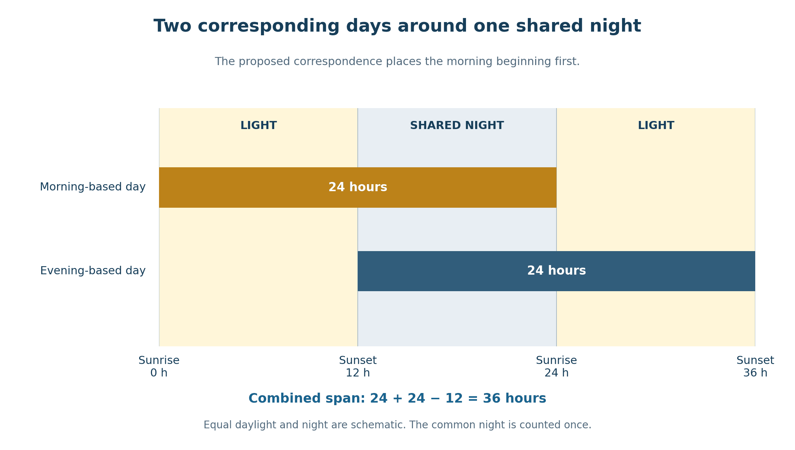
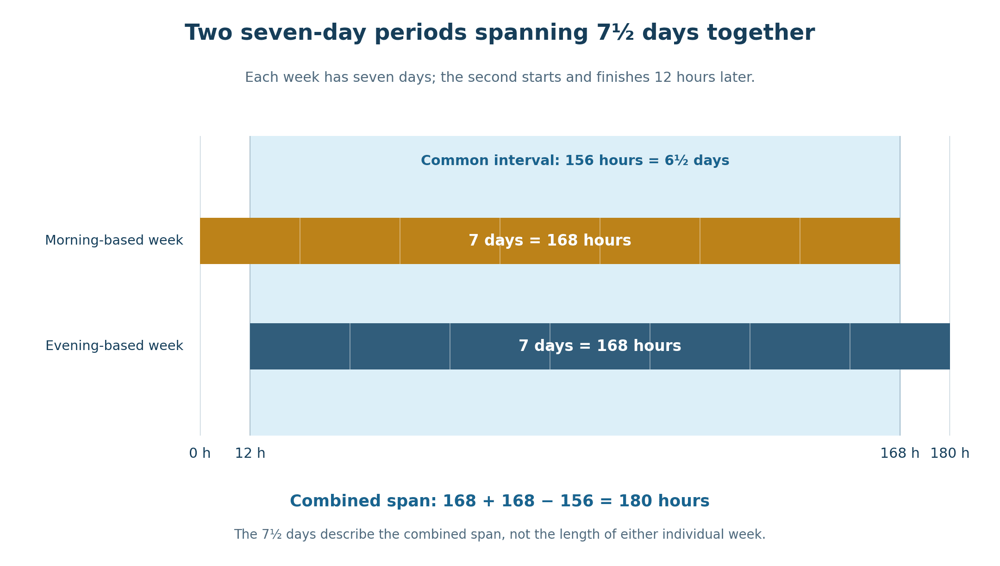
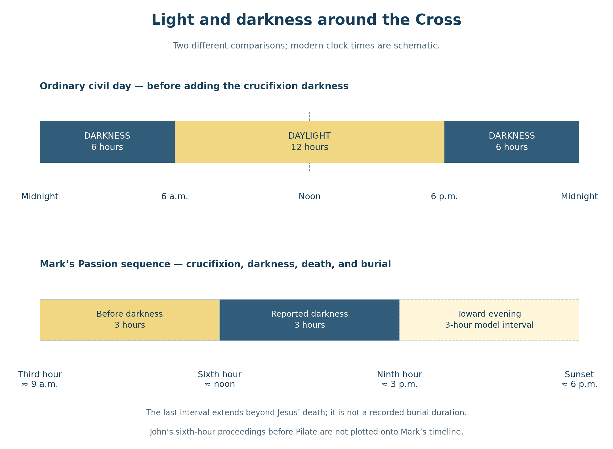

Book 1 · The Cross at the Center of Time · Chapter 3 of 18
Light, darkness, and the creation made new
God called the light “day,” and the darkness He called “night.” And there was evening, and there was morning—the first day.
— Genesis 1:5
Before Scripture appoints the sun and moon as timekeepers, it gives us light, darkness, evening, and morning. The rhythm is already present when the luminaries receive their work. I begin here because the calendars in this book serve an order that precedes their own particular arrangements.1
John's opening leads me back to that beginning. The Word through whom all things came into being is the One in whom there is life and light. When I follow Him toward the Cross, I therefore follow the Creator into His creation. The darkness at noon belongs to a world whose light He first called forth.
In this chapter I examine morning and evening as beginnings, then place their corresponding days and weeks together. The calculations give us thirty-six hours and seven and a half days as combined spans. I read those patterns within the greater movement from creation's light, through the darkness of the Passion, toward the morning of the new creation.
In this chapter
Evening, morning, and one day
Genesis 1:5 uses day first for the light distinguished from night, then for the completed numbered day. The two uses belong together, although they do not have exactly the same scope. Daylight is one part of the rhythm; the creation day embraces the sequence described around it.
The Hebrew refrain, wayhi ʿerev wayhi boqer, describes evening and then morning. Its closing yom ʾeḥad is “one day,” or day one in the unfolding sequence. I read the refrain in relation to the work that precedes it: light appears, evening comes, and morning follows. The returning morning completes the cycle and opens the next.2
On that reading, morning is a meaningful boundary. The work and its daylight are followed by the associated night. Dawn gathers the completed sequence and introduces a fresh beginning. This morning-to-morning understanding has also appeared in earlier commentary, although it is not the only interpretation of the refrain.3
Genesis does not provide a clock schedule for each command. Its arrangement is literary and theological as well as sequential: each of the first six days receives its evening-and-morning refrain, while the seventh receives completion, rest, blessing, and sanctification. The repetition teaches us to attend to the whole pattern.
The evening beginning also has an express scriptural place. Leviticus commands the Day of Atonement from evening to evening. Nehemiah associates the closing of Jerusalem's gates before the Sabbath with the approach of evening. Those passages give evening its own authority within sacred observance.4
I therefore allow morning and evening to contribute together. Genesis orders creation; the observance texts define the boundaries of particular holy times. A morning-first reading of the creation sequence can stand alongside an evening boundary prescribed for worship. Their relation becomes one of the means through which I contemplate the fullness of Christ's fulfillment.
Morning at the altar
The laws of sacrifice preserve a practical connection between daylight and the following night. The thanksgiving offering is to be eaten on the day it is offered, with none left until morning. The burnt offering remains on the altar through the night until morning. Dawn marks a limit within the service that began earlier.5
The sequence is easily pictured. An offering is presented during the day; its prescribed use or service continues through the night; morning closes the permitted period or renews the service. This gives the night a place in relation to the preceding daylight even within a religious life that also observes evening boundaries.
Ordinary narratives use the same rhythm of activity, sleep, and renewed movement. Judges 19 describes the declining day as a reason to stay overnight and depart in the morning. In 1 Samuel 19, David must escape during the night before Saul's agents act in the morning. Dawn is a boundary of practical consequence.6
Table 1 — Different kinds of biblical boundary
| Passage | What the boundary governs |
|---|---|
| Leviticus 7:15 | Morning limits the permitted eating of the thanksgiving offering. |
| Leviticus 6:9–13 | The altar's service continues through the night until morning. |
| Judges 19:4–9; 1 Samuel 19:11–12 | Morning opens a new period of travel or action. |
| Leviticus 23:32 | Evening-to-evening observance is prescribed for the Day of Atonement. |
| Nehemiah 13:19 | The approach of evening governs preparations before the Sabbath. |
These passages explain why I hesitate to reduce every temporal practice to a single formula called “the biblical day.” An eating limit, a working day, and a festival boundary each define something particular. Their coexistence is part of the evidence.
Some scholars have interpreted the morning-oriented passages as traces of an older day boundary, followed by the wider adoption of evening reckoning. I retain that possibility. The further claim that all Israel changed its dates by a single decision during the Babylonian exile goes beyond what these passages establish.7
The historical question can remain open while the scriptural patterns do their work. Morning can speak of light given at the beginning; evening can speak of a people entering darkness and waiting for deliverance. The promise of light for those walking in darkness gives that second movement a positive theological meaning. Neither boundary alone judges the faithfulness of those who keep it.8
Light before the timekeepers
Genesis places the creation of light before the appointment of the luminaries. Darkness has already been named in verse 2, so this is a priority of light over its appointed rulers within the narrative, rather than a claim that light is the first condition mentioned. On the fourth day, the greater and lesser lights receive their tasks of illumination, rule, and the marking of times.1
John takes us further back still. The Word is present in the beginning and belongs on the Creator's side of the relation between Creator and creation. I do not identify the eternal Son with a created beam of first-day light. I read creation's light as a witness to the One through whom it comes into being. Paul makes the association explicit when he joins God's command that light shine out of darkness with the knowledge of His glory in the face of Christ.8
Jesus' sayings in John extend the theme. He is the Light of the world. His presence gives urgency to the work while it is day. Those who walk in the light can see where they are going; those overtaken by darkness lose their way. The language belongs to real experience while carrying the meaning of His mission.9
This is the relation I seek in the calendar patterns. Sun and moon order the visible world, and human beings count by their courses. The One to whom they bear witness is greater than the instruments through which time is measured. Their appointed work can lead our attention toward Him.
Two rulers within one creation
Genesis assigns the greater light to rule the day and the lesser light to rule the night. Psalm 104 likewise brings the moon's appointed seasons into relation with sunset, darkness, and the return of human labor in the morning. Both luminaries serve one created order.10
I use their different spheres to contemplate the different beginnings of the day. A solar, morning-oriented view follows light into its associated night. An evening-oriented view enters the night and waits for the light. That extension from the luminaries' functions to whole calendar days is my interpretive comparison; Genesis does not name two rival calendars in these verses.
Enochic literature preserves detailed attention to both courses. Its language can invite comparison between their different beginnings, but difficult phrases and translators' explanations must retain their proper weight. Jubilees also openly disputes lunar reckoning where it displaces its prescribed festivals. The synthesis I propose in Christ gives those differing expectations a new relation; it does not erase the disagreement in the ancient texts.11
The fourth day at the center
The fourth day stands in the central numbered position of a seven-day sequence. Three days precede it and three follow. There the luminaries receive their office between the first appearance of light and the completed work leading to rest.
Table 2 — Light, its rulers, and rest
| Position | Place in the creation account | Relationship contemplated here |
|---|---|---|
| Day 1 | Light appears and is distinguished from darkness. | Light precedes the appointment of its daily rulers. |
| Day 4 | The luminaries are appointed to rule and mark times. | Three numbered days lie on each side. |
| Day 7 | God rests, blesses, and sanctifies the day. | The completed work opens into rest. |
I see in that arrangement an invitation to consider the center. It is a position in the sequence, not a timestamp for the appointment of the sun. Its importance here arises from the way creation's ordered times can be read toward Christ.
Later, Lazarus's four days in the tomb and Christ's resurrection on the third day will supply a related four-and-three comparison. Those counts belong to two narratives rather than seven consecutive elapsed days. Their proposed relationship will receive its own treatment. Here they introduce the possibility that creation, death, and renewed life can be contemplated through corresponding numbered forms.12
Two days around one night
Let us put the morning and evening boundaries on a single line. The diagrams use equal twelve-hour stretches of light and darkness so that the relationship is visible. Actual sunrise and sunset vary with season and place.
The morning-based day begins at sunrise and ends at the following sunrise. Its corresponding evening-based day begins at the intervening sunset and ends at the sunset after that. The morning beginning comes first in this selected pairing.
Each period contains twenty-four hours. They share twelve hours of night. Their combined span runs from the first sunrise to the last sunset: twelve hours of light, twelve of darkness, and twelve of light again.


The shared night is counted once. Each individual day remains twenty-four hours.
The calculation is 24 + 24 − 12 = 36. The larger span belongs to the two periods considered together. I read its light–darkness–light form as an image of a darkness enclosed by light: the night is real, yet it has boundaries on both sides.
The selected order is part of the model. If an evening-based day begins before the morning-based day paired with it, the outer pattern becomes darkness–light–darkness, although the combined length remains thirty-six hours. We must therefore state the pairing rather than assume that changing the boundary automatically produces the desired sequence.
For the same reason, the diagram leaves weekday names unassigned. Identifying both selected periods with a particular community's Sunday requires the further weekday correspondence explained in Chapter 2. The mathematical relationship can be displayed now; its historical application must carry the relevant convention with it.
Two weeks spanning seven and a half days
The same comparison extends to a week. Begin a morning-based week at sunrise and end it at sunrise seven days later. Begin the paired evening-based week at the following sunset and end it seven days after that sunset. Their beginnings and endings differ by twelve hours.
Each week contains 7 × 24 = 168 hours. Their shared interval contains 156 hours, or six and a half days. Their combined span contains 180 hours, or seven and a half days.


The additional half-day belongs to the combined span of the selected weeks. Neither calendar has acquired an extra half-day in its own week.
Table 3 — The arithmetic of the combined spans
| Quantity | Two days | Two weeks |
|---|---|---|
| Length of each period | 24 hours | 168 hours |
| Difference between their beginnings | 12 hours | 12 hours |
| Shared time | 12 hours | 156 hours |
| Combined span | 36 hours | 180 hours |
For the weeks, the calculation is 168 + 168 − 156 = 180. The same result follows when seven daily comparison windows are joined properly. Each spans thirty-six hours, but neighboring windows share twelve. Removing their six repeated intervals gives 7 × 36 − 6 × 12 = 180.13
I retain this enlarged view because it allows the solar and lunar perspectives to be contemplated together. The week remains complete in each reckoning; their combined boundaries disclose a further relation. That relation can become figuratively significant in the later Passion comparisons without being mistaken for additional elapsed history.
The distinction is especially important in a book proposing that God may truly transform time. A theological possibility does not turn one arithmetic operation into another. These figures establish overlaps and combined spans. I ask what they may signify because I believe the order they display can participate in a greater harmony at the Cross.
Darkness within the day
A civil day beginning at midnight offers another arrangement. In the equal-hour diagram it contains six hours of night, twelve of daylight, and six more of night. Noon stands at its center. This ordinary outline gives a setting against which to see the extraordinary darkness of the Passion.
Mark places the crucifixion at the third hour. Darkness comes at the sixth and lasts to the ninth. The account then gives Jesus' cry, His death, and the preparations for burial toward evening. The approximate modern equivalents are nine in the morning, noon, and three in the afternoon.14
The daylight from the third hour toward sunset can be considered in three successive portions: the hours before the darkness, the darkness itself, and the remaining daylight period associated with death and burial. The final portion extends beyond Jesus' death. It is a comparison of the day's structure, not nine hours during which He remained alive on the Cross.


The upper row shows an ordinary daily outline. The lower row introduces the reported darkness. Equal outer periods and modern clock labels are schematic; the exact completion of burial is unrecorded.
At noon, the day is brought into an unexpected darkness. I contemplate that reversal beside Genesis. There God calls light into the darkness; here the incarnate Word enters darkness at the height of the day. The movement toward new creation passes through His suffering.
This is where the proposal stated in Chapter 1 becomes most searching for me. Perhaps the darkness marks more than an interruption of ordinary daylight. Perhaps the temporal order itself is brought before the Creator, and what He accomplishes there reaches outward into the beginnings and endings of all things. I cannot derive that action from the diagram. The diagram makes visible the center around which I am asking the question.
John's sixth-hour notice still belongs before Pilate. In reading his account alongside Mark, I seek the meaning of the hour without moving the recorded scene. The later chapters return to that meaning while leaving the historical coordination of the hour notices open. The symmetry at noon and the relation between the Gospel notices are distinct questions.15
The Passover night on either side
Passover gives midnight its own scriptural weight. Exodus locates the death of Egypt's firstborn at midnight. Judgment and deliverance meet in the night remembered by Israel's feast.16
In Gethsemane, Jesus prays concerning the hour and accepts the cup of suffering. The Gospels do not state that this prayer occurred at midnight. Its place within the Passover night nevertheless invites me to contemplate the relation between the remembered judgment and the suffering He is about to bear. The association rests on the narrative setting, rather than on an unrecorded clock time or an etymological argument about the word Passover.
The proposed one-day difference between the lunar reckonings produces a further relationship. Each contains a midnight within Nisan 15. Under the earlier beginning, that midnight falls in the Thursday–Friday night. Under the later beginning, it falls in the Friday–Saturday night.
Table 4 — The two Passover midnights
| Shared historical moment | Earlier lunar reckoning | Later lunar reckoning |
|---|---|---|
| Midnight during Thursday–Friday | Within Nisan 15 | Within Nisan 14 |
| Friday noon | Nisan 15 | Nisan 14 |
| Midnight during Friday–Saturday | Within Nisan 16 | Within Nisan 15 |
The selected Nisan 15 midnights are twenty-four hours apart. Noon lies twelve hours from each. These are midnights within evening-based dates, not the beginnings of those dates.
Within Mark's sequence, Christ is already on the Cross at that intervening noon. The beginning of the darkness therefore stands at the center between the two remembered Passover midnights. This is the relationship displayed more fully in Chapter 4.
I see both perspectives approaching the same center: one through a Passover night already entered, the other through a Passover night still ahead. The historical model specifies how that symmetry arises. My theological reading asks whether it is a visible sign of the deeper reconciliation of time I believe occurs in Christ.
The morning beyond the darkness
John's account leads us from the Passion toward the tomb while it is still dark. The stone has already been removed. The Light has acted before Mary sees the visible dawn.17
The beginning of Scripture and the close of its vision come into relation here. Genesis gives light before appointing its rulers. Revelation describes a city whose light comes from God's glory and the Lamb, and a future in which night is no more. The created lights have served their appointed work; the source of light brings the creation to its fulfillment.18
The morning-first and evening-first perspectives each contribute to this movement. One begins with light and follows it through the night. The other enters the night and waits for the light. In the correspondence selected here, their common darkness is held between two stretches of light. I read that enclosure in relation to Christ's victory: death has a boundary, and the darkness cannot claim the whole.
I also ask whether the victory reaches the darkness of history itself. If the Cross is the center from which God makes His creation new, the renewal may extend toward its beginning as well as its end. The calendrical figures give that thought a form we can examine; the actual depth of God's work remains greater than the figure.
We now have the architecture needed for a particular historical comparison: days with different boundaries, dates with different beginnings, a midpoint at noon, and the movement from darkness toward morning. Chapter 4 places those relationships within the received chronology and the AD 33 Passion framework.
Sources and notes
1. Genesis 1:1–19. The opening quotation is verse 5. The distinction between first-day light and fourth-day luminaries is a feature of the narrative; verse 2 already mentions darkness. Return to text 1 · Return to text 2
2. Genesis 1:5, Hebrew text. The transliteration is simplified. The recurring evening-and-morning clauses are read here with the work preceding them; the verse does not expressly prescribe two parallel calendars. Return to text
3. C. F. Keil and F. Delitzsch, Biblical Commentary on the Old Testament, comment on Genesis 1:5. Their morning-to-morning reading is a precedent for this aspect of the interpretation, not an endorsement of the broader synthesis developed here. Return to text
4. Leviticus 23:32; Nehemiah 13:15–22. These establish evening observance and Sabbath preparation without dating a universal historical transition in day boundaries. Return to text
5. Leviticus 7:15–17; 6:9–13. Different offerings have different permitted periods. The thanksgiving offering's morning limit cannot be generalized to all sacrifices, and the altar's overnight service precludes saying that all sacrificial activity occurred only in daylight. Return to text
6. Judges 19:4–9; 1 Samuel 19:11–12. The passages describe activity and overnight waiting or escape; they do not independently define every civil date. Return to text
7. Yosef Green, “When Does the Day Begin?”, Jewish Bible Quarterly 36.2 (2008): 81–87; J. Amanda McGuire, “Evening or Morning: When Does the Biblical Day Begin?”, Andrews University Seminary Studies 46.2 (2008): 201–214. These document differing readings and historical reconstructions; a universal change in the exile is not established by citing the debate. Return to text
8. Isaiah 9:2; John 1:1–5, 9–14; 2 Corinthians 4:6. The eternal Word is distinguished from what comes into being through Him. Paul's light-and-Christ association supplies an explicit scriptural bridge for the interpretation. Return to text 1 · Return to text 2
9. John 8:12; 9:4–5; 11:9–10; 12:35–36. Twelve daylight hours do not imply twelve equal modern hours in every season. Return to text
10. Genesis 1:14–18; Psalm 104:19–23. The texts give the luminaries their functions. Associating their spheres with whole days beginning at different boundaries is the comparison proposed here. Return to text
11. 1 Enoch 73:4–8, R. H. Charles translation. At 73:7, an explanation concerning the commencement of a lunar day appears in brackets and should retain that editorial status. Compare Jubilees 6:32–38, especially its criticism of lunar reckoning. Return to text
12. Genesis 1:14–19; 2:1–3; John 11:17, 39; Luke 24:7, 46. The creation arrangement is 3 + 1 + 3 numbered positions. The Lazarus–Christ 4 + 3 comparison joins counts from separate narratives. Return to text
13. In schematic hours, the day periods are [0, 24) and [12, 36); their intersection is [12, 24), and their combined span is [0, 36). The week periods are [0, 168) and [12, 180), with a 156-hour intersection and 180-hour combined span. Seven daily windows begin at 0, 24, 48, 72, 96, 120, and 144; neighboring windows overlap by 12 hours. Shared endpoints are not counted twice. Return to text
14. Mark 15:25, 33–37, 42–47. Mark says the third hour without the word about. The modern equivalents and equal outer segments are explanatory approximations. The narrative bounds the darkness by the sixth and ninth hours but does not timestamp the precise completion of burial. Return to text
15. John 19:13–16. A Roman midnight civil boundary alone does not establish a midnight-based count for this notice; see Chapter 2. Return to text
16. Exodus 12:12–13, 23, 29; Mark 14:32–42; Matthew 26:36–46. Mark 14:35 uses a form of parerchomai, to pass or pass away. The thematic comparison does not identify that Greek verb etymologically with Hebrew pāsaḥ or supply midnight as the time of the prayer. Return to text
17. John 20:1–2. The visit to the already-opened tomb is narrated; the instant of resurrection is not. Return to text
18. Revelation 21:23; 22:5, 16. The Morning Star and the absence of night contribute to the theological movement of the chapter. The proposed transformation of past and future is the author's further interpretation, introduced in Chapter 1. Return to text
Scripture quotations are from the Berean Standard Bible (BSB), public domain.